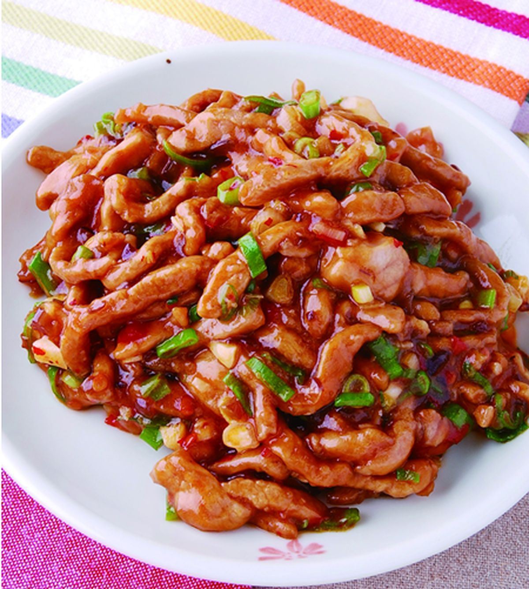

This is a Fish flavored shredded pork

Fish-Flavored Shredded Pork
Fish-flavored shredded pork is a popular Chinese dish with a perfect balance of sour, sweet, savory, and spicy flavors.
Ingredients
- 200g pork strips
- 1 carrot
- 1 green pepper
- 2 cloves garlic
- 2 tablespoons vinegar
- 1 tablespoon soy sauce
- 1 tablespoon sugar
- A pinch of salt
- 1 tablespoon Pixian broad bean paste
Steps
- Marinate the pork strips with salt and soy sauce for 10 minutes.
- Shred the carrot and green pepper, and mince the garlic.
- Heat oil in a pan, stir-fry the garlic and broad bean paste until fragrant.
- Add the pork strips and stir-fry until browned.
- Mix in the carrot and green pepper, then add vinegar, sugar, and soy sauce.
- Cook everything through and serve.